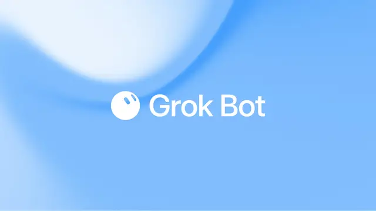

Space X / モデル更新
Grok Botが利用対象を大幅拡大、無料トライアルも開始

xAIは、PC上でアプリやWebサービスを操作し、実務を継続的に処理するAIエージェント「Grok Bot」の提供範囲を拡大しました。新たにSuperGrok Plus、Cursor Pro+、Cursor Teamsの加入者が利用可能となり、それ以外のユーザー向けにも利用量を制限した無料トライアルが提供されます。
QUICK READ
この記事の要点
「回答するAI」から「仕事を実行するAI」へ
Grok Botの特徴は、一般的なチャット型AIのように回答を生成するだけでなく、Bot自身がコンピューター環境を持ち、ユーザーが普段利用するアプリやWebサイトへログインして作業できる点です。 xAIの製品ページでは、Botに同僚へ依頼するようにタスクを渡すと、プロジェクトを開始から完了まで進め、必要な場面でユーザーの承認を求める仕組みが説明されています。 複数のBotを同時に稼働させることも可能で、調査、営業、システム管理など役割ごとに処理を並列化できます。さらに、一度ユーザーの作業手順を見せると「Routine」として保存し、同様のワークフローを再実行できる設計です。
SuperGrok PlusやCursor Pro+まで対象を拡大
Grok Botは当初、より上位の契約プランを中心に提供されていましたが、今回の発表では利用対象がSuperGrok Plus、Cursor Pro+、Cursor Teamsへ拡大しました。 製品ページでは記事作成時点で、Cursor Pro+が月額60ドル、SuperGrok Plusが月額100ドル、Cursor TeamsのStandardが1席あたり月額40ドルと表示されています。対象プランの裾野が広がったことで、常時稼働型AIエージェントを試せるユーザー層は大きく増えることになります。 加えて、対象プランに加入していないユーザーにも、利用量を制限した無料トライアルが提供されます。エージェント型AIを本格契約前に実際の業務で評価できることは、導入判断のハードルを下げる要素になりそ…
エンジニアリングでは「権限設計」が重要に
Grok BotのようなAIは、ブラウザ、ファイル、Webサービスなどを横断して実際に操作するため、従来の生成AI以上に権限管理が重要です。 便利さの一方で、どのサービスへのアクセスを許可するのか、どの操作を自動化し、どこで人間の承認を要求するのかを設計する必要があります。特に企業利用では、認証情報、業務データ、外部への送信操作などを含めた運用ルールが重要になります。
Discord掲載記事からの抜粋です。詳細・文脈は全文と出典をご確認ください。
出典・参考リンク
- x.ai ↗https://x.ai/bot
- twitter.com ↗https://twitter.com/bot/status/2090852881373311369
- x.com ↗https://x.com/bot/status/2090852881373311369
日付はAFNJPへの掲載日です。発表元の公開日とは異なる場合があります。